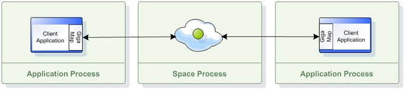
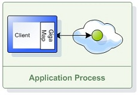
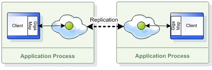
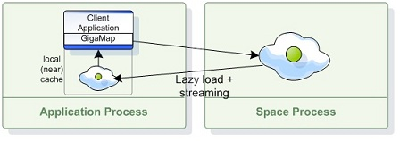
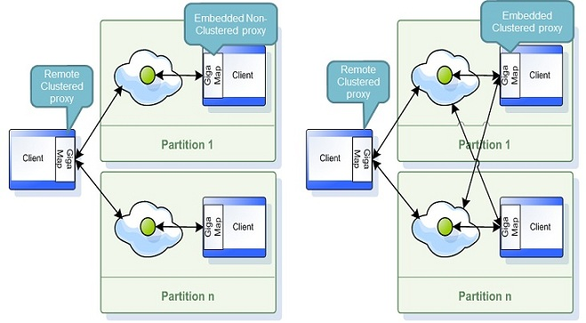

Dependencies
In order to use this feature, include the
<dependency>
<groupId>org.gigaspaces</groupId>
<artifactId>xap-map</artifactId>
<version>[%=Versions.maven-version-MX%]</version>
</dependency>
<dependency>
<groupId>org.gigaspaces</groupId>
<artifactId>xap-map-spring</artifactId>
<version>[%=Versions.maven-version-MX%]</version>
</dependency>
For more information on dependencies, see Maven Artifacts.
There are multiple runtime configurations you may use when caching your data within the space.
A client communicating with a remote space performs all its operation via a remote connection. The remote space can be partitioned (with or without backups) or replicated (sync or async replication based).
The number of backups per partition is zero or one.

Here is a very simple example how a client application can create a GigaMap interface interacting with a remote space:
<os-core:space-proxy id="space" space-name="mySpace"/>
<os-core:map id="map" space="space"/>
<os-core:giga-map id="gigaMap" map="map" />
<bean id="space" class="org.openspaces.core.space.SpaceProxyFactoryBean">
<property name="name" value="space" />
</bean>
<bean id="map" class="org.openspaces.core.map.MapFactoryBean">
<property name="space" ref="space" />
</bean>
<bean id="gigaMap" class="org.openspaces.core.GigaMapFactoryBean">
<property name="map" ref="map" />
</bean>
IMap map = new MapConfigurer(new SpaceProxyConfigurer("space").space()).createMap();
GigaMap gigaMap = new GigaMapConfigurer(map).gigaMap();
A client communicating with a an embedded space performs all its operation via local connection. There is no network overhead when using this approach.

To create a GigaMap for a co-located (embedded) space the space URL should use embedded space URL format:
<os-core:embedded-space id="space" space-name="mySpace"/>
<os-core:map id="map" space="space"/>
<os-core:giga-map id="gigaMap" map="map" />
<bean id="space" class="org.openspaces.core.space.EmbeddedSpaceFactoryBean">
<property name="name" value="space" />
</bean>
<bean id="map" class="org.openspaces.core.map.MapFactoryBean">
<property name="space" ref="space" />
</bean>
<bean id="gigaMap" class="org.openspaces.core.GigaMapFactoryBean">
<property name="map" ref="map" />
</bean>
IMap map = new MapConfigurer(new EmbeddedSpaceConfigurer("space").space()).createMap();
GigaMap gigaMap = new GigaMapConfigurer(map).gigaMap();
The Embedded space can be used in a distributed architecture such as the replicated or partitioned clustered space:

A simple way to use the embedded space in a clustered architecture would be by packaging your application as a Processing Unit and deploy it using the relevant SLA.
The GigaMap support Local Cache (near cache) configuration. This provides a front-end client side cache that will be used with the get operations implicitly. The local cache will be loaded on demand or when you perform a put operation (when the putFirst option is activated).

Here is an example for a GigaMap construct with a local cache:
<os-core:space-proxy id="space" space-name="mySpace"/>
<bean id="evictionStrategy" class="com.j_spaces.map.eviction.FIFOEvictionStrategy">
<property name="batchSize" value="1000"/>
</bean>
<os-core:map id="map" space="space" compression="1">
<os-core:local-cache-support eviction-strategy="evictionStrategy"
put-first="false" size-limit="100000" update-mode="PULL" versioned="true" />
</os-core:map>
<os-core:giga-map id="gigaMap" map="map" />
<bean id="space" class="org.openspaces.core.space.SpaceProxyFactoryBean">
<property name="name" value="space" />
</bean>
<bean id="evictionStrategy" class="com.j_spaces.map.eviction.FIFOEvictionStrategy">
<property name="batchSize" value="1000"/>
</bean>
<bean id="map" class="org.openspaces.core.map.MapFactoryBean">
<property name="space" ref="space" />
<property name="localCacheSupport">
<bean class="org.openspaces.core.map.LocalCacheSupport">
<property name="evictionStrategy" ref="evictionStrategy" />
<property name="putFirst" value="false" />
<proeprty name="sizeLimit" value="100000" />
<property name="updateModeName" value="PULL" />
<property name="versioned" value="true" />
</bean>
</property>
</bean>
<bean id="gigaMap" class="org.openspaces.core.GigaMapFactoryBean">
<property name="map" ref="map" />
</bean>
FIFOEvictionStrategy evictionStrategy = new FIFOEvictionStrategy();
evictionStrategy.setBatchSize(1000);
IMap map = new MapConfigurer(new SpaceProxyConfigurer("space").space())
.localCacheEvictionStrategy(evictionStrategy)
.localCachePutFirst(false)
.localCacheSizeLimit(100000)
.localCacheUpdateMode(UpdateMode.PULL)
.localCacheVersioned(true)
.useLocalCache()
.createMap();
GigaMap gigaMap = new GigaMapConfigurer(map).gigaMap();
The local cache support the following properties:
| Property Name | Description | Default |
|---|---|---|
| evictionStrategy | An implementation of the EvictionStrategy interface | com.j_spaces.map.eviction.FIFOEvictionStrategy |
| putFirst | Boolean value. If true will cache the value on put operation | true |
| sizeLimit | Integer value. The maximum amount of entries within the local cache. | 100000 |
| updateModeName | Controls the update mode of the local cache. Posible options UpdateMode.PULL or UpdateMode.PUSH. | PULL |
| versioned | Boolean value. Enables optimistic locking support. | true |
You may have several GigaMap used with your application, each with different characteristics , all will be interacting with the same remote space. In this case each GigaMap should use different set of keys. If you want to use same keys for these different maps, each should use a different space.
The GigaMap provides the exact semantic as the java.util.Map interface: clear, containsKey, put, putAll, get and remove methods. In addition it includes the lock , putAndUnlock , and the unlock methods.
IMap map = // get IMap either by injection or code creation
GigaMap gigaMap = new GigaMapConfigurer(map).gigaMap();
gigaMap.put(key , value);
Object value = gigaMap.get(key);
Object value = gigaMap.remove(key);
gigaMap.lock(key);
gigaMap.unlock(key);
An entry within the cache is immortal by default. You can specify as part of the put operation a specific time for the entry to be alive within the cache. Once this time elapsed, it will be expired automatically. The time unit to specify the TTL is milliseconds.
GigaMap gigaMap = ...
gigaMap.put(key , value , 5000);
There is no need to provide a Jini transaction object for the different map operations. GigaMap with the different OpenSpaces transaction managers and Spring allow simple declarative definition of transactions. This means that if there is an ongoing transaction running, most operations performed using the GigaMap interface join it, using Spring's rich transaction support.
It is highly recommended to read the transaction management chapter in the Spring reference documentation.
OpenSpaces provides a pluggable transaction provider using the following interface:
public interface TransactionProvider {
Transaction getCurrentTransaction(Object transactionalContext, IJSpace space);
int getCurrentTransactionIsolationLevel(Object transactionalContext);
}
OpenSpaces comes with a default transaction provider implementation, which uses Spring and its transaction manager in order to obtain the currently running transactions, and automatically use them under transactional operations.
GigaMap allows access to current running transactions using the transaction provider. The following code example shows how the put operation can be performed using IMap (users normally won't be required to do so):
gigaMap.getMap().put("key", "value", gigaMap.getCurrentTransaction(), 1000);
GigaSpaces supports three isolation levels: READ_UNCOMMITTED, READ_COMMITTED and REPEATABLE_READ (default). When using GigaMap, the default isolation level it is performed under can be defined in the following manner:
<os-core:space-proxy id="space" space-name="mySpace"/>
<os-core:map id="map" space="space"/>
<os-core:giga-map id="gigaMap" map="map" default-isolation-level="READ_COMMITTED"/>
<bean id="space" class="org.openspaces.core.space.SpaceProxyFactoryBean">
<property name="name" value="space" />
</bean>
<bean id="map" class="org.openspaces.core.map.MapFactoryBean">
<property name="space" ref="space" />
</bean>
<bean id="gigaMap" class="org.openspaces.core.GigaMapFactoryBean">
<property name="map" ref="map" />
<property name="defaultIsolationLevelName" value="READ_COMMITTED" />
</bean>
IMap map = // get IMap either by injection or code creation
GigaMap gigaMap = new GigaMapConfigurer(map).defaultIsolationLevel(TransactionDefinition.ISOLATION_READ_COMMITTED)
.gigaMap();
In addition, Spring allows you to define the isolation level on the transaction definition itself:
@Transactional(readOnly = true)
public class DefaultFooService implements FooService {
private GigaMap gigaMap;
public void setGigaMap(GigaMap gigaMap) {
this.gigaMap = gigaMap;
}
public Foo getFoo(String fooName) {
// do something
}
// these settings have precedence for this method
@Transactional(readOnly = false, propagation = Propagation.REQUIRES_NEW, isolation = Isolation.READ_COMMITTED)
public void updateFoo(Foo foo) {
// do something
}
}
In the above example, any operation performed using GigaMap in the updateFoo method automatically works under the READ_COMMITTED isolation level.
The GigaMap support the Lock API allowing you to establish a distributed lock on a global key. The GigaMap Lock API include the following methods:
LockHandle lock(Object key)
LockHandle lock(Object key,long lockTimeToLive,long waitingForLockTimeout)
void unlock(Object key)
boolean isLocked(Object key)
void putAndUnlock(Object key,Object value)
Here is a simple example using the Lock API:
IMap map = new MapConfigurer(new SpaceProxyConfigurer("space").space()).createMap();
GigaMap gigaMap = new GigaMapConfigurer(map).gigaMap();
String key = "myKey";
System.out.println("Before Lock:Is key " + key+ " locked:" + gigaMap.isLocked(key));
gigaMap.lock(key);
System.out.println("After Lock:Is key " + key+ " locked:" + gigaMap.isLocked(key));
gigaMap.unlock(key);
System.out.println("After unLock:Is key " + key+ " locked:" + gigaMap.isLocked(key));
The Lock API using transactions to ensure isolation and data consistency.
Here is a simple comparison between the GigaMap API vs. the GigaSpace API:
| Feature | GigaSpace API | GigaMap API |
|---|---|---|
| Batch Operations | Yes | Limited. |
| Externalizable Support | Yes | Yes – The value object should implement Externalizable. |
| Iterator | Yes | Yes |
| Unicast Notifications | Yes | Yes – Limited. |
| Jini Distributed Transaction Support | Yes | Yes |
| Local Transaction Support | Yes | Yes |
| XA Transaction Support | Yes | Yes |
| Key based Access | Yes | Yes |
| Lease | Yes | Yes |
| Simple Matching | Yes | Yes |
| Exclusive Read Lock | Yes | Yes * |
| Optimistic Locking | Yes | Yes |
| Pessimistic Locking | Yes | Yes |
| Administration API | Yes | Yes |
| Spring Support | Yes | Yes |
| Timeout (blocking) operations (read/take with timeout > 0) | Yes | Yes |
| Local Cache | Yes | Yes |
| Replicated Space | Yes | Yes |
| Partitioned Space | Yes | Yes |
| Service Grid Support | Yes | Yes |
ISpaceFilter Support |
Yes | Yes |
| Local View | Yes | No |
| POJO Support | Yes | No |
| Inheritance Support | Yes | No |
| Master-Worker Pattern | Yes | No |
| Continuous Query | Yes | No |
| Custom Query Pattern | Yes | No |
| SQL Query Support | Yes | No |
| FIFO Support | Yes | No |
| Indexing | Yes | No |
| Complex Entry Attribute Query Support | Yes | No |
| Regular Expression Query Support | Yes | No |
| Partial Update | Yes | No |
* via IMap.getMasterSpace()
When configuring a GigaMap with an embedded clustered space or with a remote clustered space, a clustered GigaMap proxy is created. A clustered proxy is a smart proxy that may perform operations against the entire cluster when needed. The put operation will be routing the key and value to the relevant partition (using the key hashcode to calculate the target partition).
The get operation will do the same by routing the operation to the relevant partition. The putAll will generate a bucket per partition for all entries that should be placed within the same partition and perform a parallel write to all relevant partition.
Many times, especially when working with a Processing Unit that starts an embedded space, operations against the space should be performed directly on the cluster member without interacting with the other space cluster members (partitions). This is a core concept of the SBA and Processing Unit, where most if not all the operations should be performed in-memory without leaving the Processing Unit boundaries, when a Processing Unit starts an embedded space.

Embedded Non-Clustered GigaMap proxy vs. Embedded Clustered GigaMap Proxy
The decision of working directly with a cluster member or against the whole cluster is done in the GigaMap level. The MapFactoryBean provides a clustered flag with the following logic as the default value: If the space is started in embedded mode (i.e. /./space), the clustered flag is set to false. When the space is looked up in a remote protocol i.e.
jini:////space
<os-core:embedded-space id="space" space-name="mySpace"/>
<!-- By default, since we are starting in embedded mode, clustered=false -->
<os-core:map id="directMap" space="space"/>
<os-core:map id="clusteredMap" space="space" clustered="true"/>
<bean id="space" class="org.openspaces.core.space.EmbeddedSpaceFactoryBean">
<property name="name" value="space" />
</bean>
<!-- By default, since we are starting in embedded mode, clustered=false -->
<bean id="directMap" class="org.openspaces.core.MapFactoryBean">
<property name="space" ref="space" />
</bean>
<bean id="clusteredMap" class="org.openspaces.core.map.MapFactoryBean">
<property name="space" ref="space" />
<property name="clustered" value="true" />
</bean>
IJSpace space = // get Space either by injection or code creation (using /./space url)
IMap directMap = new MapConfigurer(space).createMap();
IMap clusteredMap = new MapConfigurer(space).clustered(true).createMap();
The above example shows a typical scenario where the clustered flag is used. Within a Processing Unit, an application might need to access both the cluster member and the whole cluster directly.
OpenSpaces is built on top of the Spring consistent exception hierarchy by translating all of the different JavaSpaces exceptions and GigaSpaces exceptions into runtime exceptions, consistent with the Spring exception hierarchy. All the different exceptions exist in the org.openspaces.core package.
OpenSpaces provides a pluggable exception translator using the following interface:
public interface ExceptionTranslator {
DataAccessException translate(Throwable e);
}
A default implementation of the exception translator is automatically used, which translates most of the relevant exceptions into either Spring data access exceptions, or concrete OpenSpaces runtime exceptions (in the org.openspaces.code package).